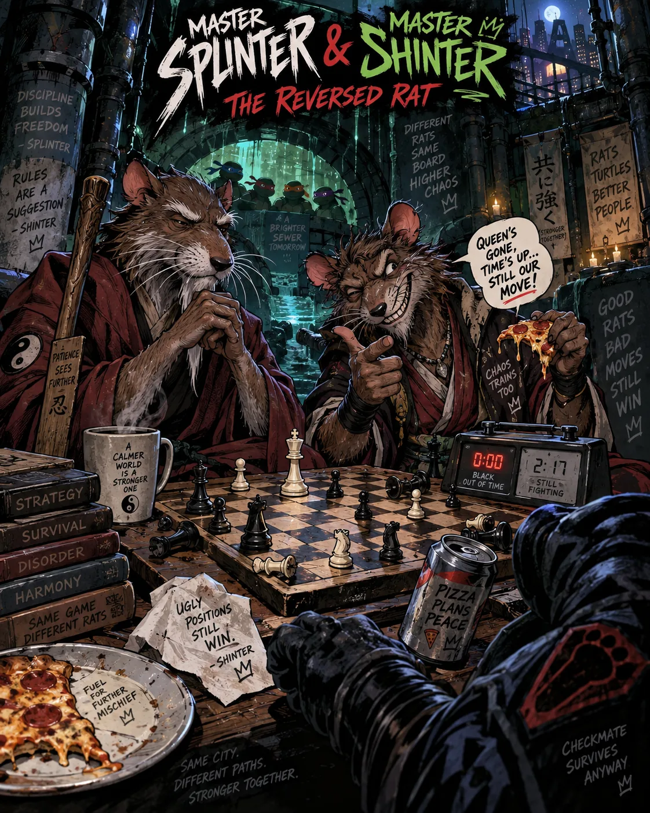
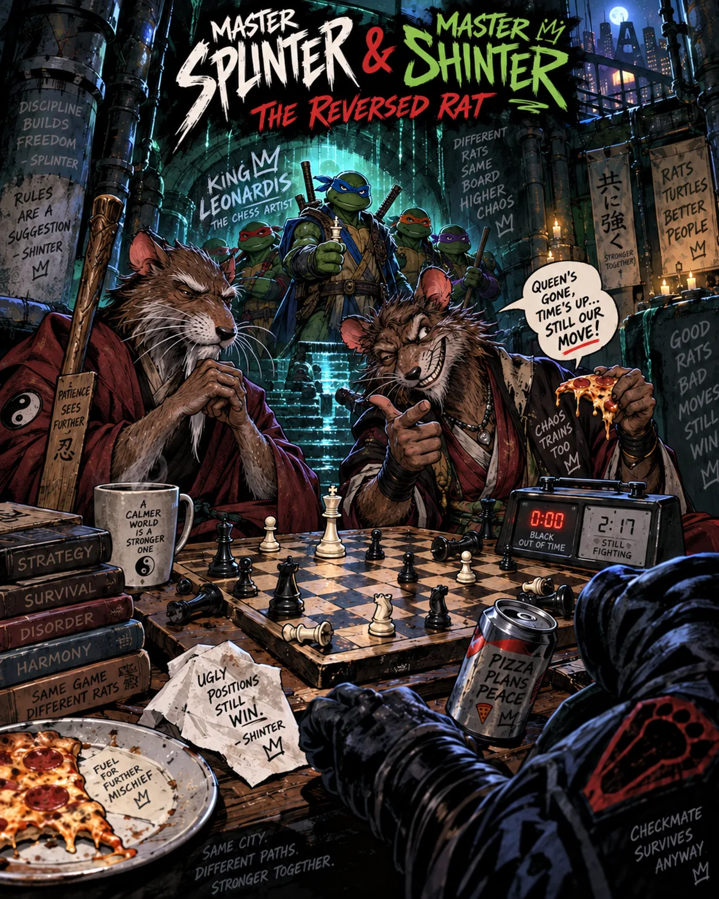
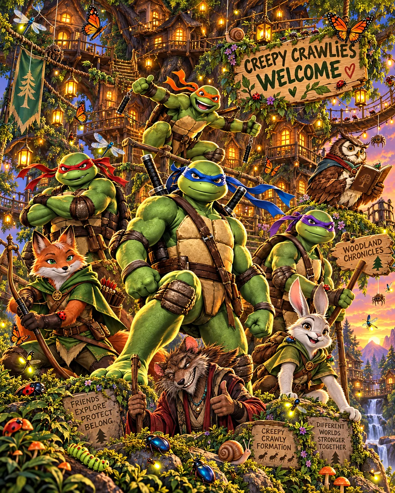

Chess Worlds
The Woodland chess instructional novella trilogy is the heart of this world: expansive and concise, fantastical and exact, ridiculous and sweet. Every playable board, narrated replay, musical experiment, and analysis tool here supports its central promise—learn real chess without sanding away imagination.
The Woodland novella trilogy
The flagship instructional manual in three family-friendly books: an unfolding story, a branching adventure, and an opening journey.
The Woodland Losers
The expansive twenty-five-game story: funny, honest, whimsical, and grounded in the moves that were actually played.
Book 1 · ReadMaster Board Adventure
Choose paths, test alternatives, and learn why one changed move can reshape an entire woodland journey.
Book 2 · ChooseWoodland Chronicles
Experimental openings meet standard roads in a fantastical, practical manual for building a thoughtful repertoire.
Book 3 · ExploreRecent Chess Worlds
September 26, 2026 · Fresh artwork and annotated games from Manny’s studies.
{kind=link}

{kind=link}

{kind=link}

Latest PGN studies and games
Download a PGN, then load it in Chess Maestro. Original comments and study variations are preserved.
Creepy Crawly Formation
1 game / study chapters
Download PGN ↓King Leonardis
1 game / study chapters
Download PGN ↓Mantis Queen
1 game / study chapters
Download PGN ↓Master Splinter & Master Shinter
7 games / study chapters
Download PGN ↓Old Engines Attack
2 games / study chapters
Download PGN ↓The Great Halfsitation
1 game / study chapters
Download PGN ↓Vant Kruijsing
1 game / study chapters
Download PGN ↓Titled Arena Warm-up September ’26
22 games / study chapters
Download PGN ↓Supporting chess suites
Replay the trilogy's games, test its lessons together, and experience the same chess through sound, terrain, timing, and analysis.
Chess Maestro
Twenty-five fully narrated games, move-by-move cast tracking, music, terrain, engine coaching, PGN loading, and optional over-the-board branching.
Replay and exploreWhimsy Chess
The project home, screenshots, cast, Vim interface, installation notes, and links to the complete source.
Project overviewPlay and study
Boards, clocks, analysis, and musical interpretations.
Before You Take
A short, rule-based capture tutor: predict the reply, keep your defenses, and count the exchange. Six guided exercises.
Tutor prototypeUltrabullet Emulator
A local chess clock and speed-training board.
PlayMusical Kernel Ultrabullet
Turn PGN rhythm into musical structure.
MusicChess Logic
Explainable positional reasoning by relaxation rather than opaque search.
ReasoningChess Premove
Clock pressure, uncertainty, and the entropy of acting early.
TimingWorlds and perspectives
The same game seen through cognitive, biometric, voxel, and narrative lenses.
Voxel Maestro
The board as a walkable influence landscape.
3-DRelaxed Chess Brain
Every local PGN learned as a living hierarchical relaxation network.
Working neural fieldChess Brain
A chess mind grown one representational dimension at a time.
CognitionCognitive Fingerprints
The intelligence inherent in the shape of a game.
StyleChess Biometric
Play style explored as a possible second factor.
IdentityMore lessons
Archived games, respectful instruction, and the road ahead.
Tiny Creek Community Chess
A real six-to-eight-meeting pilot with inexpensive sets, free lessons, honest costs, youth safeguards, and measurable outcomes.
Public-benefit pilotNext Milestones
A licensed Lichess-derived platform first; generic-stream NLP-GRRLE after stable chess milestones.
RoadmapUltrabullet Lessons
Short practical lessons drawn from fast games.
Learn